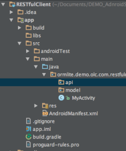

What is REST ?
REST stand for Representational State Transfer. It relies on a stateless, client-server, cacheable communications protocol and in virtually all cases, the HTTP protocol is used. REST defines a set of architectural principles by which developers can design web-services that focus on system’s resources, including how resource states are addressed and transferred over HTTP by wide range of clients written in different languages.
When first introduced in year 2000 by Roy Fielding, University of California, REST did not attract any attention. But based on statistics of last few years, REST has managed to dominate the web-service design model. In fact, REST has had such a large impact on the Web that it has mostly displaced CORBA, RPC and SOAP, WSDL-based interface design models because it’s considerably simpler in style and development.
RESTful Web-Services
RESTful applications use HTTP requests to post data (create and update), read data, and delete data. REST uses HTTP for all four CRUD (create/read/update/delete) operations.
For most developers, REST is a lightweight alternative mechanism for designing Web-Services. Even though it’s lightweight, REST is fully-featured; there’s basically nothing you can do in web-services that can’t be done with a RESTful architecture.
But But !, REST is not a “standard”, so there will never be a W3C recommendation for REST :( cause developers can “roll your own” REST frameworks standard libraries based on Perl, Java, C# or whatever the language they prefer.
How easy is REST !
Let’s start with an example… We will compare two web-service one design using SOAP and other using REST to get detailed information about someone by passing his/ her Id.
Using SOAP, the request will look like this;
<?xml version="1.0"?> <soap:Envelope xmlns:soap="http://www.w3.org/2001/12/soap-envelope" soap:encodingStyle="http://www.w3.org/2001/12/soap-encoding"> <soap:body pb="http://www.acme.com/phonebook"> <pb:GetUserDetails> <pb:UserID>12345</pb:UserID> </pb:GetUserDetails> </soap:Body> </soap:Envelope>
Using REST, the request will look like this;
http://www.acme.com/phonebook/UserDetails/12345
Well I guess there’s no need of explanation here, right ;)
I’ll explain anyways…. So in the first request which was done using SOAP, the entire message has to be sent using HTTP POST request. Which is considerably larger than the RESTful request. And again the SOAP request probably be an XML file, where the result or the response wrapped inside “payload” tag inside SOAP response envelop.
Now look at the RESTful request, note that is not the request body, it’s just the URL !! This URL is sent to the server using a GET request and the HTTP reply is the raw result data. Not embedded inside anything, you decide how to wrap it.
Enough about REST, let’s move on to the Android client…..
Tutorial
This tutorial will focus on how to easily build and RESTful Android Client using two awesome libraries, Retrofit and GSON.
What’s Retrofit ?
Simply put, “Retrofit turns your REST API into a Java interface”
It’s an nice framework for organizing API calls in your project. The request method are relative URL are added with an annotation, which make the code clean as simple. And with annotations, you can easily add a request body, manipulate the URL or headers and add query parameters to the request.
Java Interface;
public interface GitHubService { @GET("/users/{user}/repos") List<Repo> listRepos(@Path("user") String user); }
Learn more about it here.
What’s GSON ?
GSON (aka Google GSON) is an open-source java library to serialize and deserialize java objects to JSON representation. So it can be used to convert JSON string to Java objects and vise versa. Oh and the best part is, GSON can work with arbitrary java objects, including pre-existing object that you don’t have source code of.
But why !?
Well, there are quite a few open-source projects that convert java objects to JSON. But most of them need java annotations in class; something that you can’t do to classes that you don’t have access to. And most do not support the use of java generics. So comes the the GSON for the rescue….
Gson Goals
- Provide simple toJson() and fromJson() methods to convert Java objects to JSON and vice-versa
- Allow pre-existing unmodifiable objects to be converted to and from JSON
- Extensive support of Java Generics
- Allow custom representations for objects
- Support arbitrarily complex objects (with deep inheritance hierarchies and extensive use of generic types)
.toJson() Serializing Object to JSON
String userJSON = new Gson().toJson(obj);
.fromJson() Deserialize object from JSON
DataObject obj = new Gson().fromJson(jsonString, DataObject.class);
Learn more about GSON from here.
Let’s do this thing !!!!!
For this tutorial I’ll be using and open weather API from openweathermap.org/api as our RESTful API. You can download the Android Studio sample project GitRepo from here.
Project Structure
For this project I’ve created two packages, ‘model’ to place all out object classes and ‘api’ package to place all our API call classes.
Step 1: Importing Dependencies
For this project we need two dependencies libraries called Retrofit and GSON.
com.squareup.retrofit:retrofit:1.9.0 com.google.code.gson:gson:2.3.1
You can find out how to add dependencies to a project in this tutorial here.
Step 2: Creating the Model Class
You can create your model class as the way you have always created the model class. But when creating the class make sure to give property names, exactly similar to the JSON propert names or you can user the @SerializedName(“json_name”) annotation to map JSON value to the property value. To use that you need to import “SerializedName” package.
import com.google.gson.annotations.SerializedName;
@SerializedName("error")
public boolean status;
In the demo you will find the model class named as Country in model package.
Step 3: Creating the RESTful API Class
I always prefer isolating same context API calls to separate classes to reduce the code complexity and improve manageability.
package ormlite.demo.olc.com.restfulclient.api;
import ormlite.demo.olc.com.restfulclient.model.Country;
import retrofit.RestAdapter;
import retrofit.converter.GsonConverter;
import retrofit.http.GET;
import com.google.gson.Gson;
import com.google.gson.GsonBuilder;
import java.util.List;
public class RestCountriesAPI {
private const String service_url = "https://restcountries.eu/rest/v1";
public interface GetAllAPI {
@GET("/all")
List<Country> getCountries();
}
public List<Country> GetAllCountries() {
Gson gson = new GsonBuilder().create();
RestAdapter restAdapter = new RestAdapter.Builder()
.setEndpoint(service_url)
.setConverter(new GsonConverter(gson))
.build();
GetAllAPI service = restAdapter.create(GetAllAPI.class);
List<Country> countrylist = service.getCountries();
return countrylist;
}
}
Defining the Interface
In your API classes the first thing you have to do is to define the interfaces, that mean saying Java what are the REST API classes that you are going to work with. In our example that would be getting the country list from the API by calling ‘/all’.
public interface GetAllAPI {
@GET("/all")
List<Country> getCountries();
}
Here, @GET is the request type for the for calling the API and List<Country> return type from the API call. And we have called that method ‘getCountries()’ as the framework will implement what happen inside it.
Implementing
Next step of you class should be to implement the interfaces that you have defined earlier. For that we use the Retrofit framework RestAdapter. RestAdapter class is responsible generating the implementation of our interfaces in out case GetAllAPI interface.
public List<Country> GetAllCountries() {
Gson gson = new GsonBuilder().create();
RestAdapter restAdapter = new RestAdapter.Builder()
.setEndpoint(service_url)
.setConverter(new GsonConverter(gson))
.build();
GetAllAPI service = restAdapter.create(GetAllAPI.class);
List<Country> countrylist = service.getCountries();
return countrylist;
}
Gson class has been instantiated here so that will do the job of converting the JSON repose into out class variables. And then we initialize the RestAdapter with Service URL and Gson instance.
Calling the APIs
List<Country> countrylist = service.getCountries();
As simple as it gets, only thing you have to do is call the interface method as above and Retrofit and Gson frameworks will handle the rest and give you the output as you expect. And that’s it ! now you have a fully functional RESTful Android client with you that can be use to call any REST API.
Usage
private class DownloadFilesTask extends AsyncTask<String, Integer, List<Country>> {
protected List<Country> doInBackground(String... urls) {
RestCountriesAPI api = new RestCountriesAPI();
return api.GetAllCountries();
}
protected void onProgressUpdate(Integer... progress) {
}
protected void onPostExecute(List<Country> results) {
StringBuilder sb = new StringBuilder();
for(Country country : results)
{
Log.d("Countries Output: ", country.getName());
sb.append(country.getName() + "\n");
}
((TextView) findViewById(R.id.txt_log)).setText(sb.toString());
}
}
As above I suggest call your APIs through Android AsyncTasks. To lear more about AsyncTasks click here.
References
GitHub Link: https://github.com/LakithaRav/RESTfulClientDemo
Retrofit : http://square.github.io/retrofit
Gson : https://github.com/google/gson
Android AsyncTask : http://developer.android.com/reference/android/os/AsyncTask.html

{kind=link}